This tour has been booked through Kesari. It is a 10-day tour. The tour starts from Hubli and ends at Mangalore. There are 3 nights' stay at Hubli, 2 nights' stay at Murudeshwar, 1 night's stay at Udupi, and 3 nights at Mangalore.
Kesari arranged a bus from Hubli. All the travel was through one bus. Of course, the bus was air-conditioned, but it is not a Volvo. And throughout, the road was not good; also, some places had hill roads with many hairpin bends. So the bus journey was not very comfortable. However, the bus driver was good and nowhere did he drive rashly or apply sudden brakes. Every 2 or 3 hours, they stopped the bus for using the washroom or tea/coffee. The climate was not bad. In some places, it was raining. Hotels are ok and food was also not bad.
We left Pune by Goa Express and the train was at the right time. Goa Express departed at 4:30 pm from Pune. This train goes via Satara, Karad, Miraj, and Londa. From Londa, one part of the train goes to Goa and the other is attached to a different train and that goes to Hubli via Alnar, Dharwar. In most of the novels of Mrs. Sudha Murthy, we can see the beautiful description of Hubli and Dharwar. Also, Dharwar is famous for its Dharwar Peda! This Peda is much bigger in size than the normal Peda of Maharashtra. We reached Hubli around 8 am on 12/10/19.
Hubli station was impressive! Very clean and every platform is having an escalator. So there was no pain of lifting suitcases to cross over the bridges. Kesari has booked a room in hotel Kyriad. This hotel is about 6 km from the station and situated in the center place of the city. The room was good and the food served in this hotel was too good.
After freshening, we went around the city and in Kamat hotel we took breakfast. Kesari arranged lunch at Kyriad hotel. Lunch was good. After the lunch, we went to see a very old Siva temple called Chandramouleshwar temple.
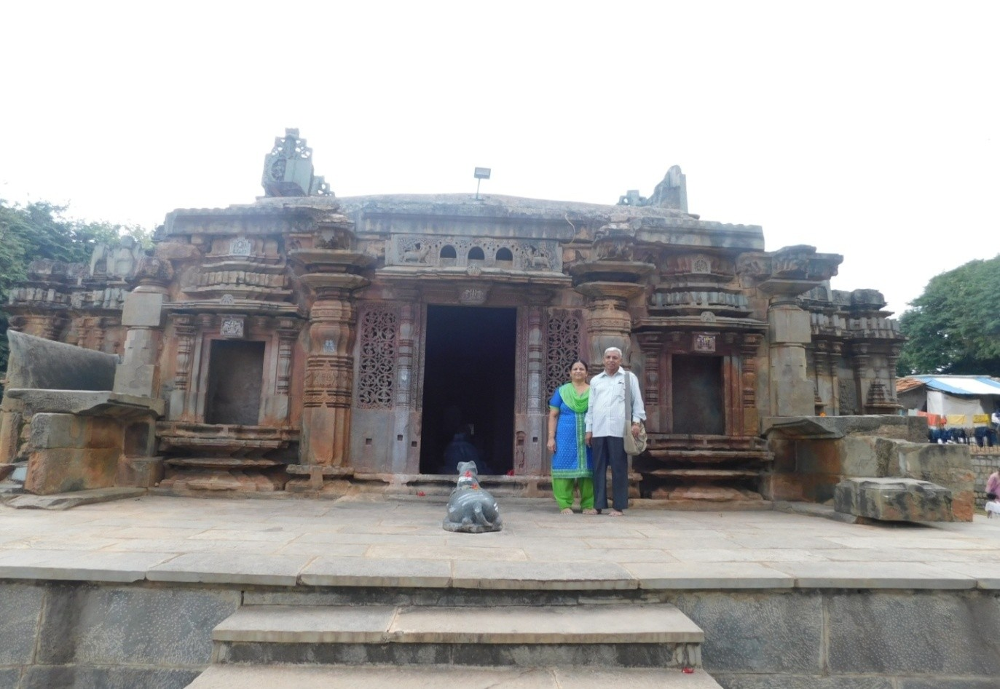
It is just 2 km from the hotel. After this temple, we saw Unkal lake. It is fairly a big lake. Unfortunately, this lake is not maintained properly. Then we went around the market area and went back to the hotel. After the delicious dinner, we had a good sleep.After a heavy breakfast, we proceeded to Hampi. It is about 170 km from Hubli. It took nearly 4 hours to reach. In this place, two famous temples are there. They are Virupaksha temple and Vijaya Vittala temple.
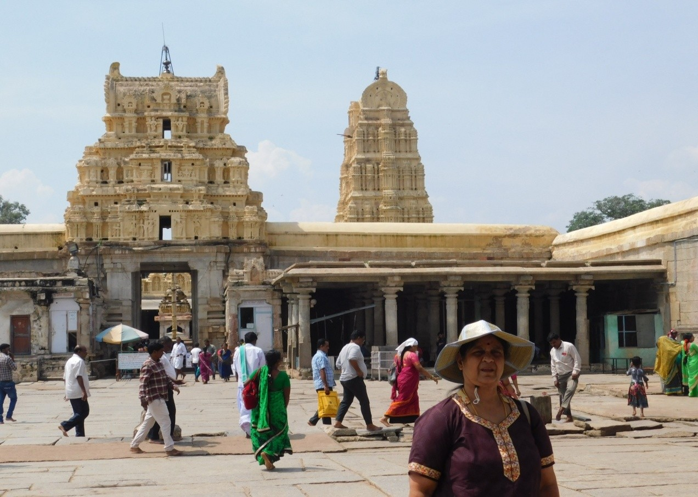
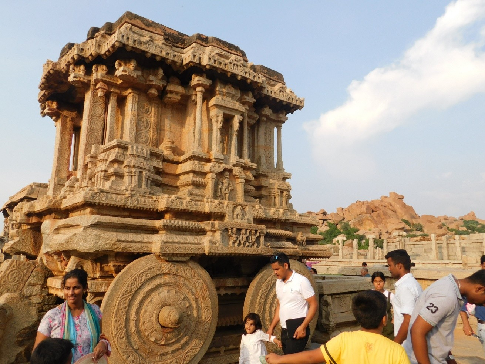
These temples belong to the 7th century, constructed by Krishna Devarayar, emperor of the Vijayanagara Empire. After him, his son-in-law was ruling this empire and he was defeated by Mogul kings and the whole temple complex was ruined. Now only these two temples, partially damaged, are existing. Virupaksha temple is on the bank of the river Tungabhadra.From Virupaksha temple, Vijaya Vittala temple is about 3 km away. Battery car transport is available to go to Vijaya Vittala temple. These two temples are beautiful with lots of architectural sculptures. After these two temples, we returned back to the hotel. Because of the bad road, we could come back at almost 11 pm.
On 14th Oct also we had to get up early and get ready early to proceed to Badami. After our usual breakfast of idli, vada, etc., around 8 am we proceeded to Badami. Badami is 105 km away from Hubli. It took nearly 3 hrs to reach this place. Badami, a beautiful town with a lot of temples, was the capital during Chalukyas' time (5th and 6th century, much older than Hampi).
Over a hill, four cave temples are carved. To reach the top, we have to climb about 1000 steps. The first cave is called the Shivite cave.
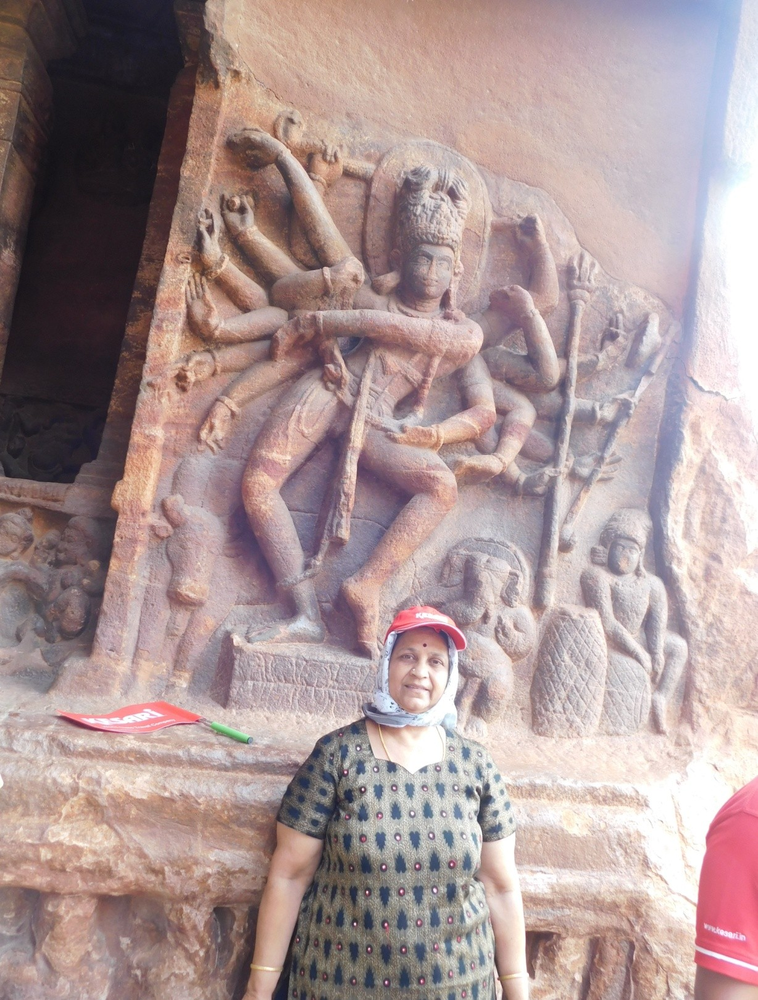
Here the carving of 18-armed Shiva is famous and it reflects several postures of Bharatnatyam. Also, the sculptures of Ganesha and Ardhanareeshwara are famous. Ceilings are also decorated with beautiful carvings. After climbing hundreds of steps, we can find the second cave called the Vishnu cave. Here also we see lots of beautiful carvings. The third cave is called the Vaishnav cave. The fourth cave is called the Jain cave.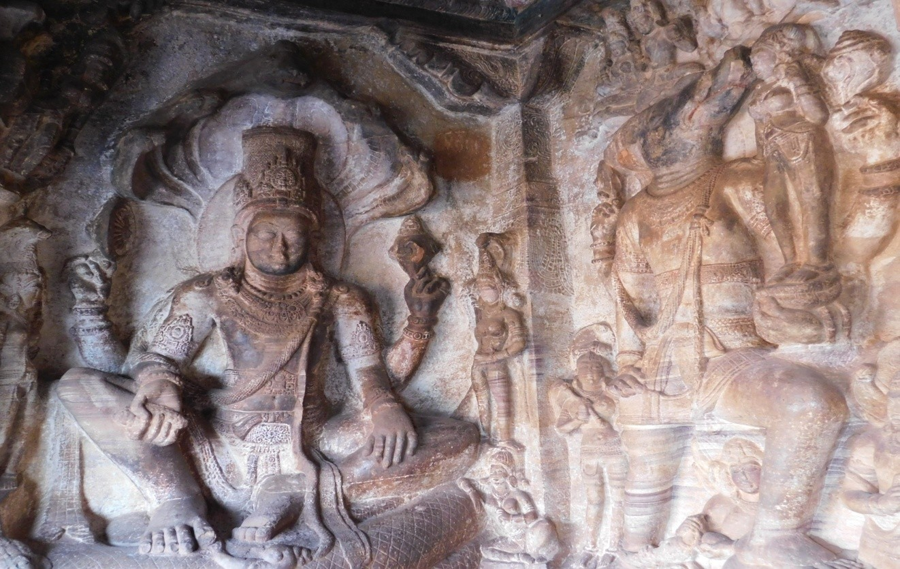
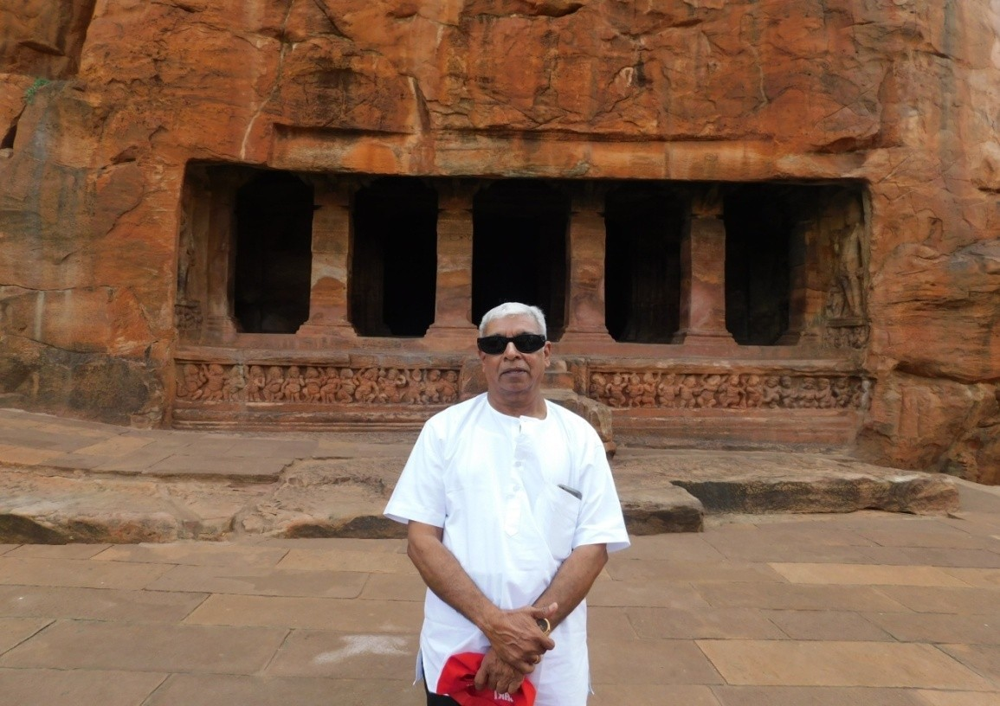
After seeing all the four caves, we went to the Shiva temple.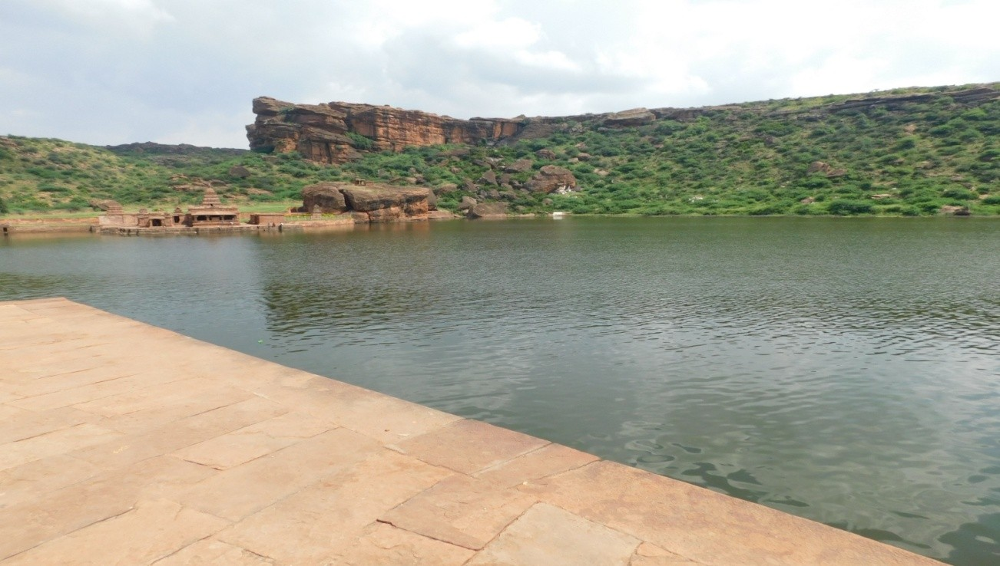
Adjacent to this temple a lake is there. After this temple’s visit, we took lunch and proceeded to Shakambari temple, one among the 51 Shaktipeeths. After this Devi temple, we returned back to Hubli.On 15th October, we left Hubli with our baggage towards Murudeshwara.
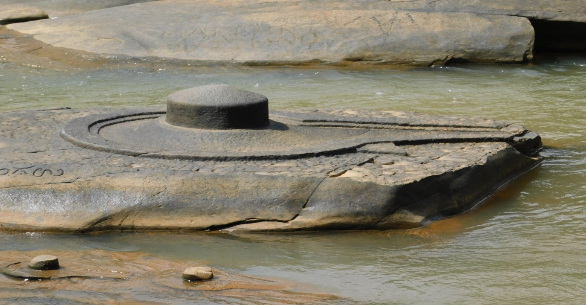
Murudeshwara is 205 km away from Hubli, and about a 5-hour bus journey. On the way we stopped at Sahasralinga. In this place over the river Shalmala, one thousand lingas are carved over the rocks which are on the river and river banks. After this linga darshan, on our way to Murudeshwara, we stopped again at Sri Marikamba temple.After the temple, we stopped at Jog waterfalls.
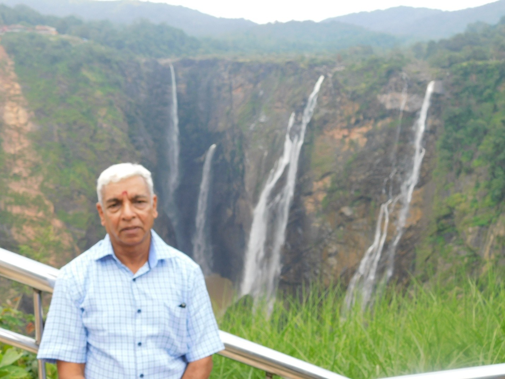
This is the second-highest waterfall in India. This waterfall is from the river Sharavathi. But we saw only a little water. I heard from the guide that this waterfall goes dry in summer. Perhaps, during rain, more water may flow in this waterfall. After spending an hour in the waterfall area, we proceeded to Murudeshwara and reached our hotel around 7 pm. Hotel room and food were not very impressive.After the breakfast, we started to move to the famous temple Athmalinga in Gokarna. This place is called the Kasi of South India. We had a nice darshan, and even we could touch this sacred deity. After this place, we proceeded to Murudeshwara temple.
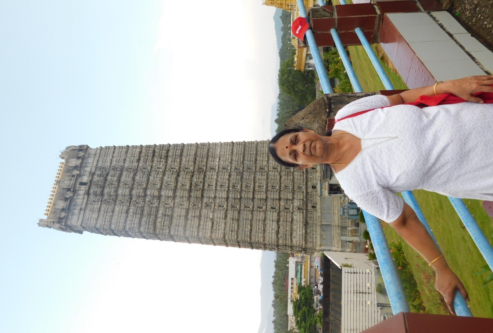
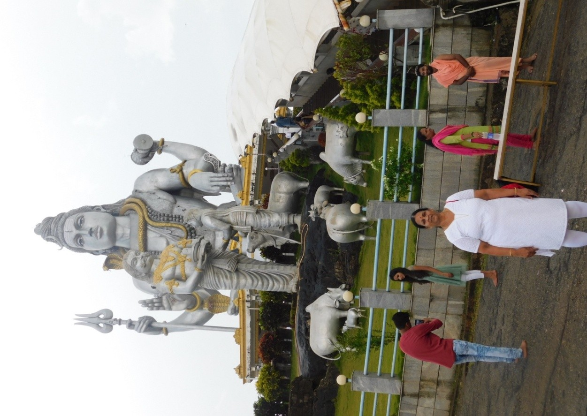
This temple is beautiful. The Gopuram of this temple is the second tallest in India. The first one is at Srirangam, Tiruchy. Lift facility is there to reach the top floor of the Gopuram. We went there also. Adjacent to the temple, a large statue of Shiva is erected over a hill. We can climb to this place and have a close look. Also, many beautiful statues—Arjun in a rath with Krishna, Ganesh, and Ravan with Athmalinga, etc., are there. In this temple, a museum is there and here in the painting gallery, the story of Athamalingam is nicely depicted. This temple is close to the seashore.On the 17th morning, after the breakfast, we vacated the hotel room and proceeded to Udupi. On the way, we stopped at Kollur. Kollur is about 70 km from Murudeshwara. In Kollur, we visited the famous Mookambika temple. After this temple, we proceeded to Udupi. Before going to the hotel, we visited Udupi Krishna temple. This temple premises is called Udupi Anantheshwara temple. A queue system is followed to worship the deity. The worshipping pattern is different. We can see the deity only through a silver-plated window with nine holes. This temple architecture is very similar to Kerala temples. Within the same temple premises, a Lord Siva temple is also there in the name of Chandramouleswarer. After the temples' visit, we reached our hotel, just in front of Malpe Beach.
Only one night we stayed at Udupi. On the 18th morning, from Udupi, we proceeded to Mangalore via Shringeri temple.
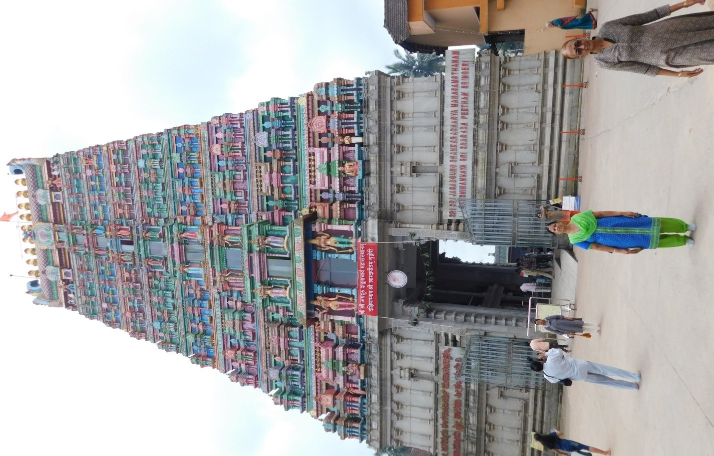
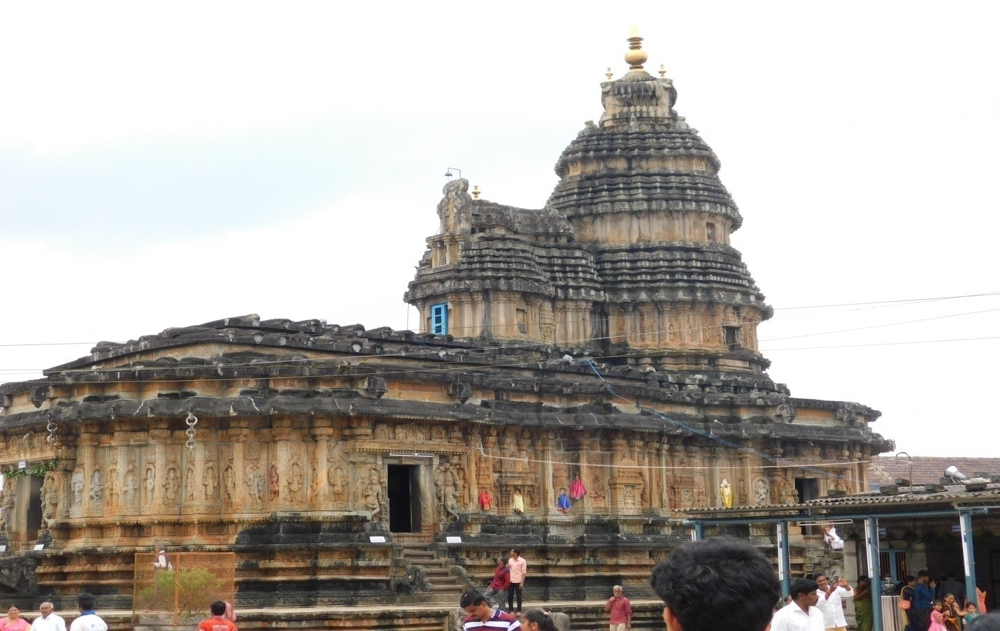
From Udupi, this place is about a 3-hr journey. It is a hill road with many hairpin bends and dense forest. Shringeri temple, called the Sarada Peetham, was established by the spiritual leader Adi Shankaracharya. The main deity is Goddess Saraswathi. Also, a Shiva temple is there within the temple complex. After the temple visit, we had our lunch in a local hotel and proceeded to Mangalore.On the way to Mangalore, we had a stop at a place called Moodabidri. Here a Jain temple is there with 1000 stone pillars. Here many beautiful stone sculptures are seen. After this temple, we reached the Mangalore city. Before going to the hotel, we visited the famous Manjunath temple of Mangalore. This is the oldest Shiva temple and situated at the foot of the hill Kadri. After this temple, we checked into a hotel, Safire.
After our breakfast, we left Mangalore to visit Kukke Subramanya temple.
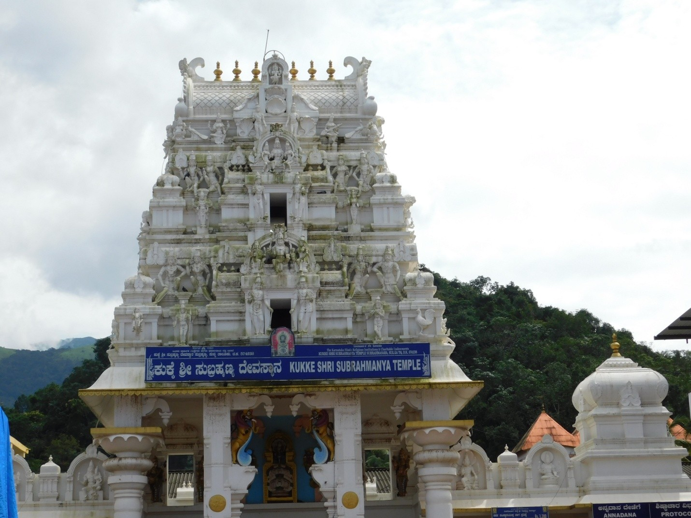
This place is about 100 km away from the main city. This temple is situated on the river banks of Kumaradhara. Here the main deity is Subramanya. The posture of the deity is unique. Lord Subramanya is standing over snake Vasuki with a peacock. Also, a Shiva temple is there within the premises. Here special poojas are conducted for Sarpa Dosha like Shri Kalahasti. A queue system is there to see the main deity. We stood in the queue and had darshan without any difficulty.After our breakfast, we proceeded to Dharmasthala.
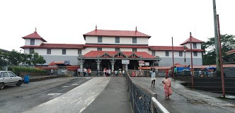
It is about 75 km from Mangalore city and about a 2-hour bus journey. We reached this place around 11 am. Being Sunday, a long queue was there to worship the main deity. Kesari arranged a special ticket to have a quick darshan. The ticket is Rs 200/- per head. In spite of the ticket, we stood about an hour in the queue. This temple is about 700 years old. The main deity is Lord Shiva worshiped as Manjunatheswara. After the visit, in a local hotel, we had our lunch and proceeded to Mangalore city. Before going to the hotel, we visited Mangala Devi temple of Mangalore. Kesari arranged a gathering at the hotel hall and a cake was cut and distributed. Also, Kesari distributed books.Since Kesari’s tour has been completed and our train was only in the evening, we visited nearby temples. Close to the hotel, there are nine temples! After lunch, we took rest for some time and Kesari dropped us at the railway station. We boarded Mangalore Express and arrived in Mumbai the very next day morning around 11 am. From CSTM, we took Nagercoil Express and arrived in Pune around 4 pm.
Journey Reflection
This ten-day journey through the coastal heritage of Karnataka was a profound exploration of ancient architecture, spiritual landmarks, and natural wonders. From the clean, modern efficiency of Hubli station to the 1,000-year-old carvings of Badami and the majestic heights of Murudeshwar, the trip offered a perfect blend of history and devotion. Despite the challenging roads and long bus hours, the experience of touching the Athmalinga at Gokarna and witnessing the architectural marvels of Hampi and Moodabidri made the travel truly unforgettable. A successful family expedition concluding with a safe return to Pune via Mumbai.